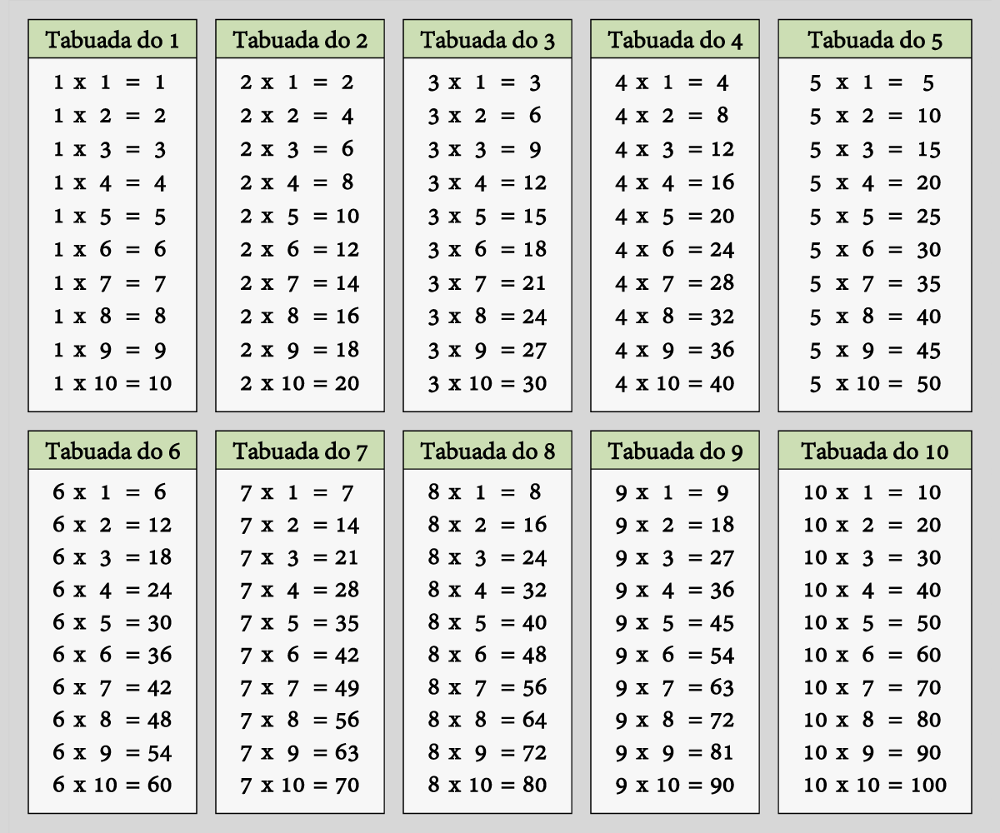

Aqui você verá os assuntos básicos de matemática pro ENEM, aqueles que sempre caem.
Multiplicação
Conhecemos como multiplicação a soma sucessiva de um número por ele mesmo. Para fazer a representação da multiplicação entre dois números, utilizamos o símbolo “×” ou o símbolo “·”. O resultado da multiplicação é conhecido como produto, e os números que serão multiplicados são chamados de fatores. Para encontrar o resultado da multiplicação, é necessário conhecer a tabuada e aprender a aplicar o algoritmo dessa operação quando necessário.
Em uma multiplicação, cada termo recebe um nome.
Fatores: os números que estamos multiplicando.
Produto: o resultado da multiplicação.
Exemplo:
3 × 7 = 21
3 e 7 → fatores
21 → produto
Para encontrar o produto entre dois números menores ou iguais a 10, utilizamos a tabuada:

Quando o produto da multiplicação não está na tabuada, é necessário utilizar o algoritmo da multiplicação. Vamos compreender seu funcionamento por meio da playlist a seguir: